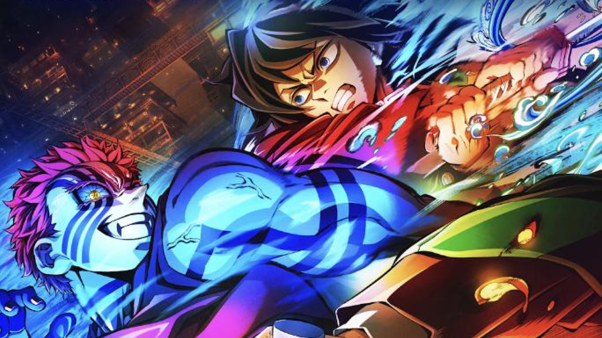
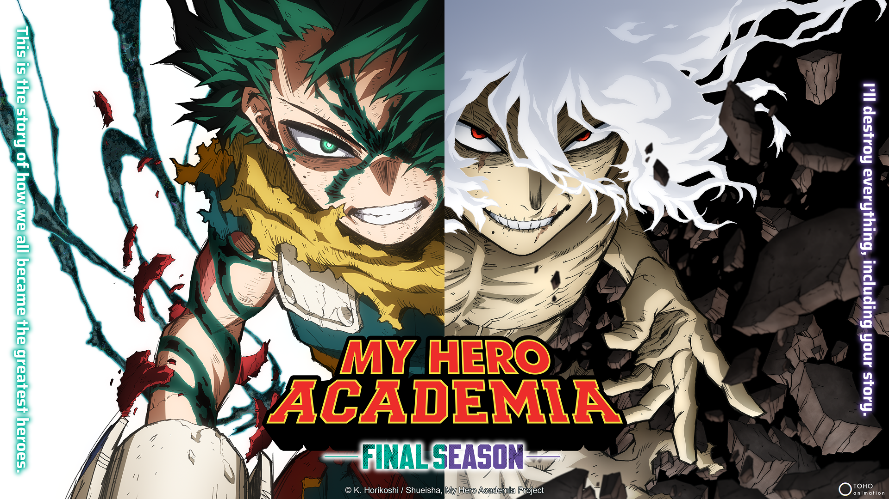
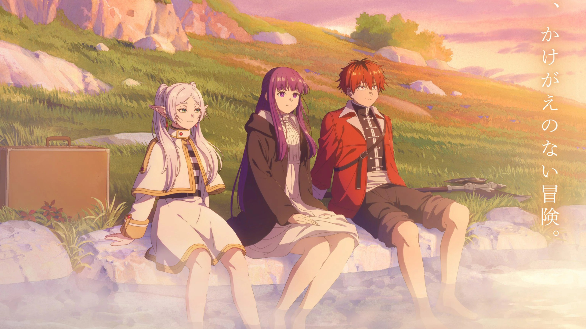

FEATURED ANIMES
A collection of the latest hits
Chainsaw Man Reze Arc
Denji faces Reze in a bloody clash of love and betrayal.

Demon Slayer Infinity Castle
Tanjiro faces Muzan in a final battle within the Infinity Castle.

Jujutsu Kaisen Culling Games
Sorcerers battle for survival in the deadly Culling Game.

My Hero Academia's final season
The ultimate showdown between heroes and villains

Frieren: Beyond Journey's End
Frieren and her companions venture into untamed northern lands.